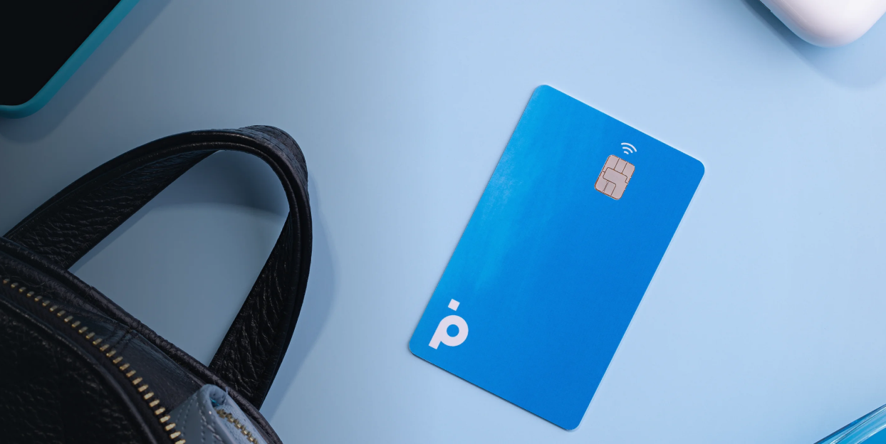
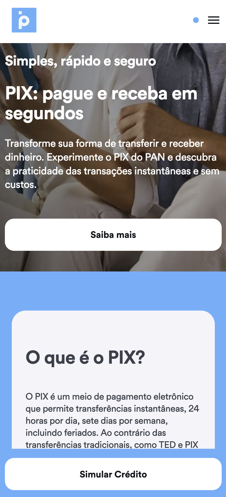
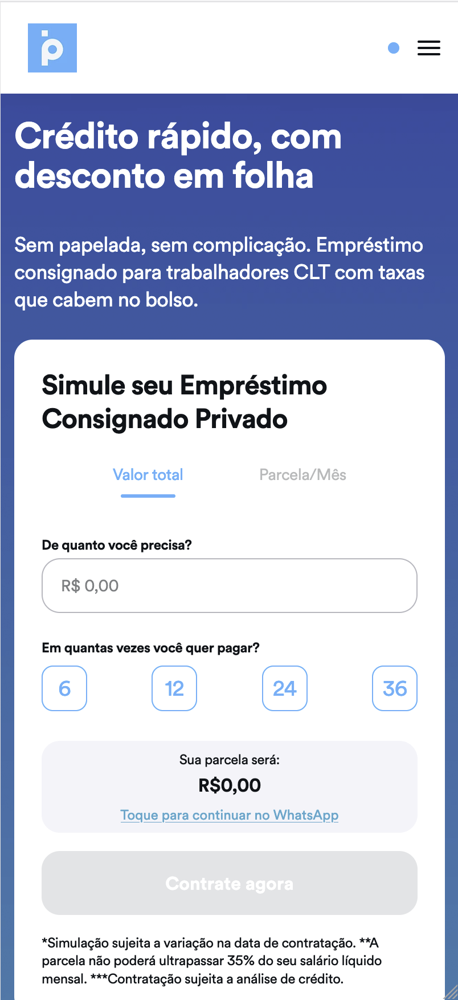
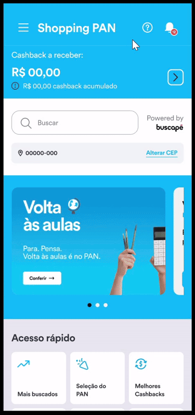

Hubs de produtos
Páginas que reuniam Conta Digital, Cartões e modalidades de Empréstimo em uma experiência mais resumida e orientada.
Case study · Product Design · 2 anos
Como a atualização das páginas do Banco PAN evoluiu para uma frente de produto envolvendo SEO, CRO, conteúdo, Design System e jornadas dentro do app.
Cheguei ao projeto durante um rebranding total da marca. Inicialmente, minha atuação seria atualizar as páginas do site. Conforme o trabalho avançou, começaram a aparecer conflitos de design, usabilidade, conteúdo e arquitetura.
O objetivo deixou de ser apenas aplicar uma nova identidade visual. Passamos a trabalhar para reduzir a quantidade de páginas, tornar os fluxos mais atraentes e dar um propósito claro para cada ponto de contato.
Ao mesmo tempo, precisávamos trabalhar com um Design System já criado e testado pelo banco, além de lidar com uma comunicação limitada com algumas equipes do cliente.
O plano de ação foi construído a partir de benchmarks, conversas com Marketing e SEO, pesquisas internas e observação das dúvidas dos usuários nas redes sociais.

Páginas que reuniam Conta Digital, Cartões e modalidades de Empréstimo em uma experiência mais resumida e orientada.
Revisão de conteúdo, hierarquia e pontos de entrada para tornar a narrativa da marca mais atraente.
Simuladores nas páginas de produto para ajudar o usuário a entender valores e possibilidades de contratação.
Uma frente de conteúdo para responder dúvidas, aprofundar produtos e apoiar o ranqueamento orgânico.
Reformulação do shopping interno, unindo a experiência do banco a uma lógica de descoberta e comparação.
Evolução de componentes conforme novas necessidades surgiam, mantendo consistência e escalabilidade.
Criação de oportunidades para apresentar outros produtos da marca no momento adequado da jornada.
Como o acesso aos dados do site era limitado, criamos um método próprio para entender dores e oportunidades. O processo combinou benchmark estruturado, conversas com Marketing, SEO e CX e observação dos comentários dos usuários nas redes sociais.
Durante os dois anos, atuei na criação de protótipos, evolução do Design System, pesquisas e handoffs para Engenharia. A proximidade com diferentes equipes do banco ajudou a transformar sinais dispersos em hipóteses e prioridades.
O trabalho acontecia ao lado de uma pessoa de CX, uma pessoa de Produto e uma pessoa de Engenharia que atuava diretamente no banco. Essa colaboração foi essencial para transformar as oportunidades em entregas concretas.



As iniciativas tiveram rápidas aprovações do cliente e da diretoria, melhoraram a comunicação com Engenharia e contribuíram para uma experiência de marca mais consistente.
“O maior resultado foi transformar uma demanda de rebranding em uma agenda contínua de evolução do produto.”